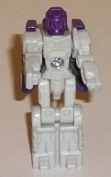
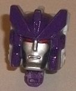
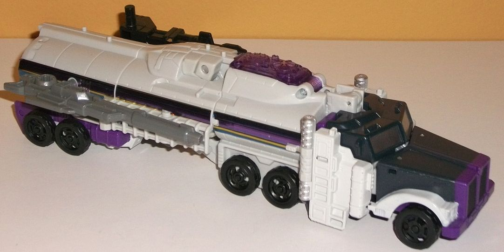
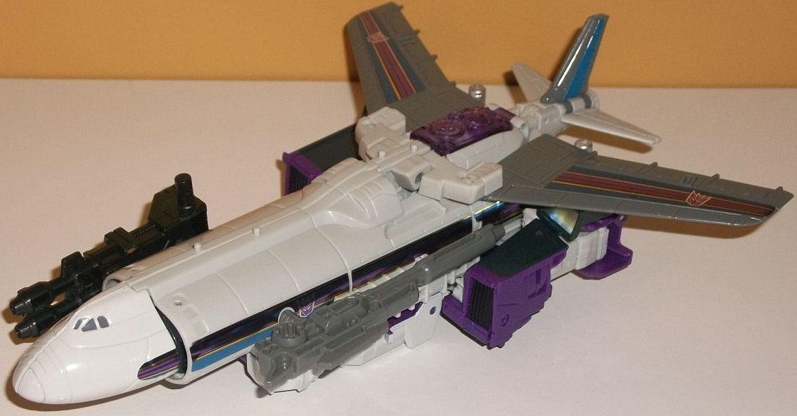
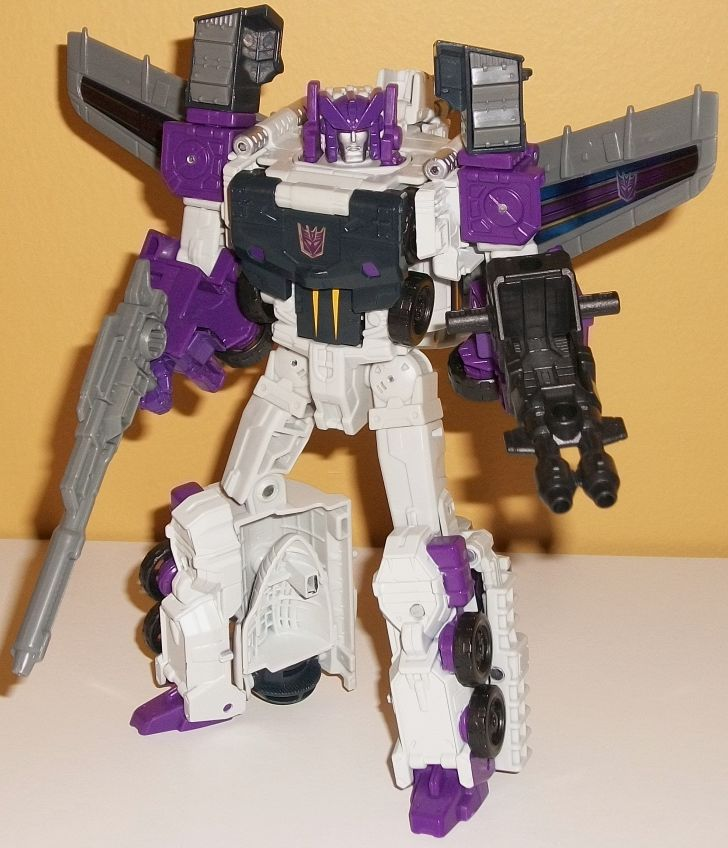

Allegiances
: Decepticon
Size
: Voyager
Difficulty of Transformation to Truck
:
Hard
Difficulty of Transformation to Jet
:
Medium
Color Scheme
: Off-white, dark purple,
gray, very dark bluish gray, and some black, silver, blue, light orangish
"cheesy" yellow, dark gray, dark red, and transparent purple
Rating
: 8.7
(NOTE: Because this is a repaint, this is not a full-blown review. This mainly covers any changes made to the mold and the color scheme, and merely compares it to Titans Return voyager Optimus Prime w/ Diac. For a review on the mold itself, read the review of Titans Return vouager Optimus Prime w/ Diac here .)


Since Octone is a remold
of Optimus Prime, his Titan Master Murk is a remold of Titan Master Diac.
In robot mode, Murk has no new mold changes; in fact, he's pretty bland
and clearly an afterthought in terms of colors and looks. In robot mode
Murk's all off-white with a purple head, and that's it. No paint at all,
and having just the head be purple is kinda weird. In head mode, Murk has
a new face-- i.e. Octane/Octone's face. It's pretty spot-on to Octane's
head in terms of proportions, with large diagonal forehead bits, a center
angular bit in the center of said forehead, and some helmet sections on
the side of the face with circular "ear buds". The entire helmet area is
painted purple, while the face is painted silver and the eyes a dark red.
From a side view, having just the front of the helmet be purple while the
rest of the head is off-white looks a bit odd, but otherwise it's a solid
new headsculpt.



Octone's color scheme
is, as you'd expect, pretty similar to his G1 toy's, but with a few extra
bits of color here and there. A lot of him is off-white, which by itself
is pretty bland, but the purple contrasts extremely well with it on the
lower arms, the shoulders, the head, bits of the lower legs, and hands.
In general this means that the robot mode's color scheme is a bit better
and more varied, since more of the purple is available there (though a
nice transparent shade of purple is used for the cockpit). In his other
modes, however, there's quite a bit of both a medium shade of gray and
a very dark bluish gray. Though the medium gray-- on some sections like
the soulders and wings-- doesn't really look all that great since it's
also monochrome like the white, the dark bluish gray at least adds a bit
of dull color on sections like much of the truck front, the robot chest,
and abs. There's also some black on expected parts like the wheels. To
add in a bit more color variation, there's some foil stickers consisting
of purple stripes surrounded by dark blue stripes on the wings and sides
of the truck mode. I don't normally like foil stickers, but the colors
on these and the way they fit against the off-white just looks
right,
for some reason. For some accent colors there's some light orangish "cheesy"
yellow spike-like details on the abs, blue stripes on the tailfins, silver
on the truck windows, and dull gray on the airplane windows. They're mostly
decent little accents, but they don't really add much to the color scheme
since they're so small/minor overall.
As for mold changes,
Octane has longer, thinner wings than Optimus, and generally they look
much better proportionally, even if they don't fold behind the back in
robot mode and they make the truck halves on the side of the jet mode more
obvious. (They also stick out of the back end of the truck mode just a
titch.) The jet nosecone sections have also been remolded to look more
realistic-- another plus, in my opinion. The chest plate and abs have been
changed to match the G1 toy a bit better, with a less detailed, flatter
chest (but with a few "bolt plating" details molded in). The interior of
the truck pieces on top of the shoulders is also different, with some more
bolt-plated armor details in there. Instead of a sword, Octone comes with
a long, single-barrel gun, while he keeps the dual-barreled gun that Optimus
has. As already mentioned he also has a new facesculpt, though when plugged
into the robot mode, the side antennae bits that pop up that are meant
for Optimus don't really look good on Octone.
Octone is definitely
the character this toy was made for, and looks substantially better than
Optimus in jet mode in particular. The robot mode also looks better overall
with a less back-packy look with the thinner, more straightforward wings
framing his form. The color scheme is pretty decent-- the off-white and
gray are a bit bland, but the purple really contrasts well against both,
and the foil stickers actually look good-- though it's not the main draw.
To me it's that we've finally got a decent-sized, fairly accurate Octane
toy that looks great in all molds. My favorite use of this mold/design--
recommended.
Review by Beastbot